Building Permits: The Housing Leading Indicator
The Census Bureau's monthly building-permits number and why it leads GDP, the S&P 500, and the credit cycle.
A building permit is the paperwork stage before a home is built, so tracking new permits gives an early read on GDP growth, S&P 500 direction, and the health of the US credit market.
The gist
- Building permits are the FIRST stage of the housing pipeline (permit -> start -> completion), so they LEAD construction activity and hence GDP and the S&P 500.
- Lead times: permits lead starts by ~3-4 months, starts lead completions by ~4-12 months, so permits lead completions by ~8-16 months.
- The number signals three things at once: developer sentiment (they pay $500-$1,000 per application), home-buyer demand, and the liquidity/health of the US banking and credit market.
- Read the year-on-year % change for direction (permits YoY and GDP YoY move together) and watch the level against a long-term trend of ~1.3-1.4M permits (SAAR), with peaks near/above 2M and cyclical troughs around 700k-800k.
- A monthly change of +/-20% tends to be an extreme; the moves that follow are usually smaller (a mean-reversion tell).
- Reported SAAR (thousands) in the 2nd-3rd week of the month for the prior month; data back to 1959. There is no rulebook -- read it in context with the other leading indicators and Fed policy.
Where building permits sit in the leading-indicator toolkit
- Recap of the leading indicators so far: real interest rates and the yield curve (government bonds); IG and HY/junk spreads over the 10-year (corporate bonds); M2 money supply (accessory); stock-market volatility (S&P 500 VIX).
- Surveys covered: ISM Manufacturing PMI, ISM non-Manufacturing (services) PMI, and the University of Michigan Consumer Sentiment Index (UMCSI).
- This lesson adds the Census Bureau's Monthly Report on Building Permits to the survey list.
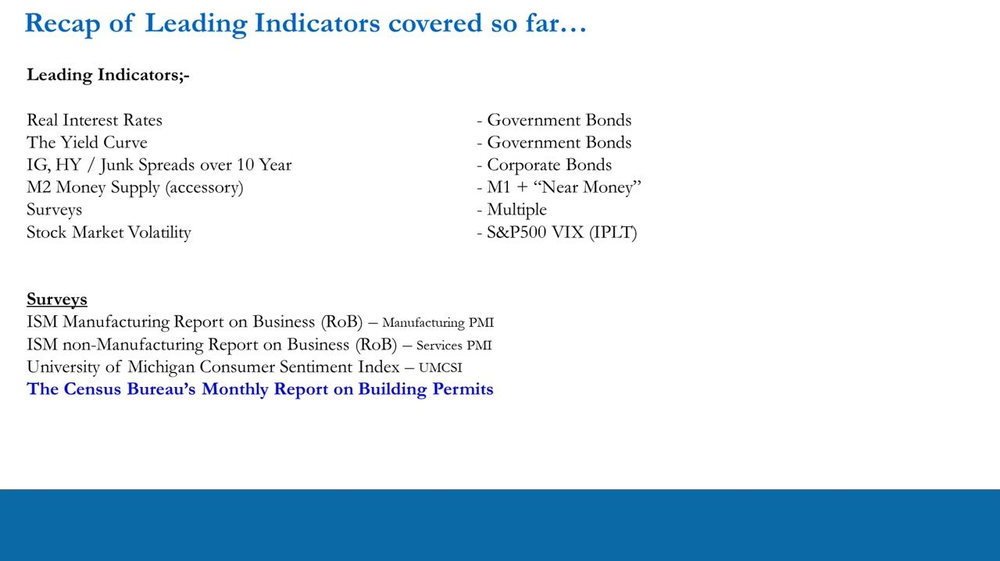
What building permits are and where to get them
- The number is taken from the Census Bureau's monthly Housing Starts report and is used to predict GDP growth and S&P 500 returns.
- Anton calls it one of the most misunderstood economic numbers in the US -- even professional traders and seasoned economists miss the signals it gives.
- Data source: census.gov/construction (the PermitsSA sheet, or the PDF). Released in the 2nd or 3rd week of the month for the PREVIOUS month.
- Reported as a Seasonally Adjusted Annualised Rate (SAAR) in thousands: e.g. Dec-2020 = 1,704 = 1.7 million permits authorised.
The US housing sector produces several economic indicators; building permits is the one that reads earliest because it captures activity before any physical building happens.
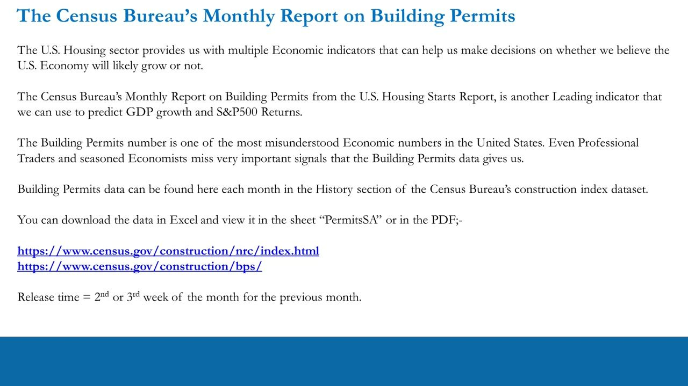
The housing pipeline: permit -> start -> completion
- Building Permit = LEADING indicator -- the paperwork/planning-permission stage; the project is authorised but not yet built.
- Housing Start = COINCIDENT -- foundations are laid; physical commodities (cement, steel, copper) become the house; economic activity happening now.
- Housing Completion = LAGGING -- structure and interior finished, home being marketed; the project is ending.
- Lead times (from Census 'length of time' distributions): permits lead starts by ~3-4 months; starts lead completions by ~4-12 months (the bulk in 4-9 months); therefore permits lead completions by ~8-16 months.
About 43% of starts begin in the same/prior month as the permit (some states let developers break ground before the permit is issued) and ~51% within 1-3 months, so Anton prudently uses 3-4 months for permits-to-starts. The long permits-to-completions lead is what makes the number so valuable.
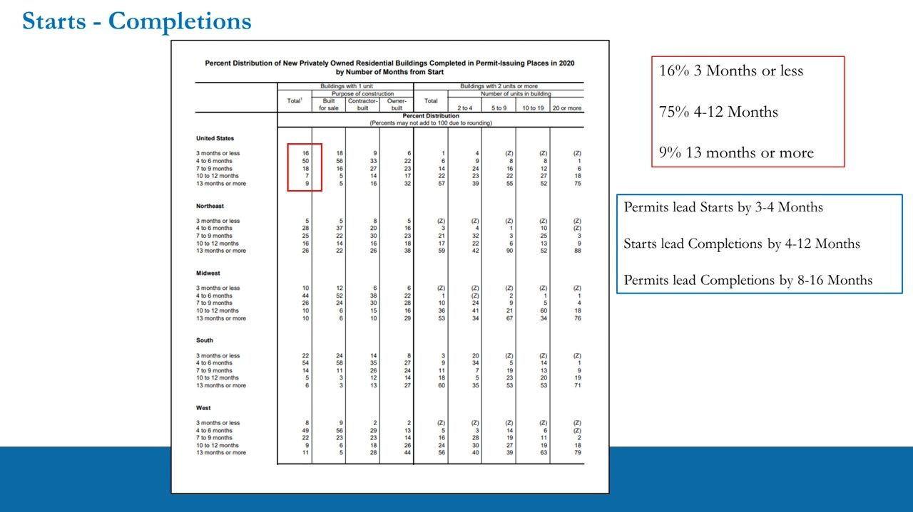
What the permits number actually tells you (three signals)
- Developer sentiment: developers must physically apply and pay $500-$1,000 per home, so more applications means they are bullish on future home sales. 'They don't do it for fun.'
- Home-buyer demand: the US consumer's appetite for housing; runs in tandem with consumer sentiment and can foreshadow changes in consumer spending.
- Liquidity and health of the US credit market: developers finance with a mix of equity/cash/debt and buyers use mortgages, so permits gauge the supply of loans -- the health of the banking sector and credit markets.
This is why the number is 'misunderstood' -- it infers far more than housing alone: it reaches sentiment, consumer spending, and credit-market liquidity.
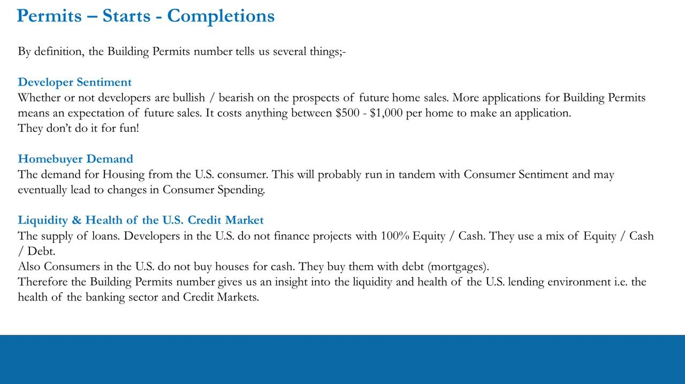
Survey design and coverage
- The Building Permits Survey provides national, state and local statistics on the number and valuation of new privately-owned housing units authorised by permits.
- Data are self-reported by local permit officials via a voluntary mail survey, on Form C-404 ('Report of Building or Zoning Permits Issued for New Privately-Owned Housing Units').
- It covers all 'permit-issuing places' -- the sample grew from ~10,000 jurisdictions in 1959 to ~20,100 from 2014 onward, so data goes back to 1959.
- Excludes 'HUD-code' manufactured (mobile) homes.
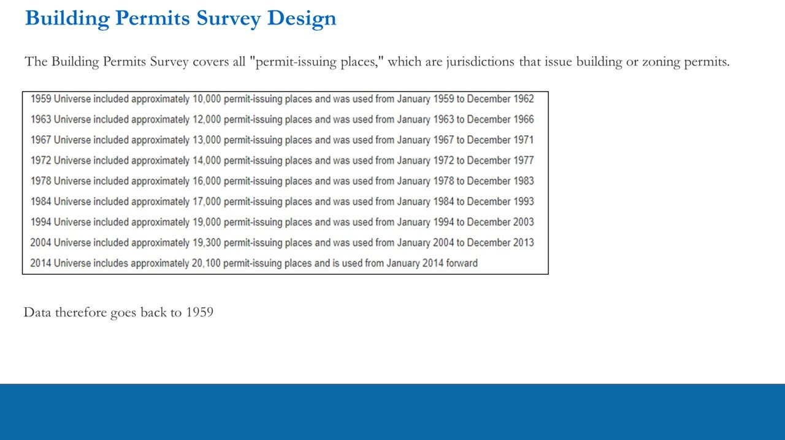
National, regional and state detail (and the SAAR caveat)
- Reported for 4 regions (Northeast, Midwest, South, West) and by individual state; key states to watch are New York, Florida, Texas and California.
- The headline US rate is seasonally adjusted (SAAR); the state-level series is NOT seasonally adjusted -- it is raw monthly unit counts.
- For portfolio direction Anton uses the headline US SAAR number; the state/regional split is extra colour.
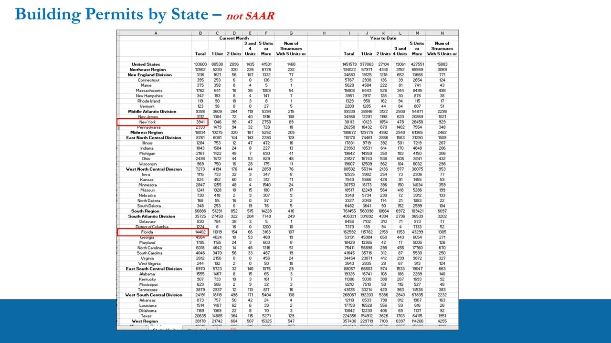
Reading the chart: level, trend and the +/-20% rule
- Like the UMCSI, permits have no fixed expansion/contraction line -- read the LEVEL against a long-term trend and against historical peak/trough zones.
- Long-term average trend line is roughly 1.3-1.4 million permits (SAAR). Peaks sit near or above 2 million; normal pre-GFC troughs were around 700,000-800,000.
- The +/-20% monthly-change rule: a month-over-month move of +20% or -20% tends to be an extreme, and the moves that follow are typically not as big (a mean-reversion tell).
- Turning points to watch: the long uptrend/downtrend channel breaking, and the level crossing the 1.3-1.4M trend from above (weakening) or below (recovering).
The chart plots the permits level (blue), the MoM % change (green up / red down bars) and a roughly flat long-run trendline over 1960-2020. Troughs line up with recessions.
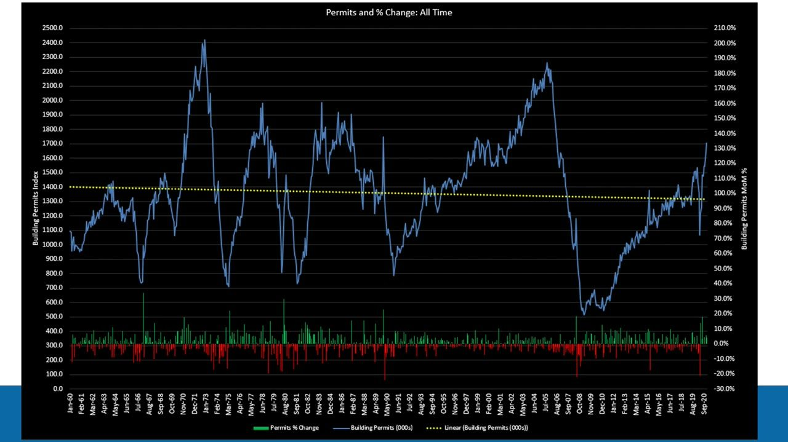
Permits vs GDP and the S&P 500
- The key read is the year-on-year % change: when permits YoY is positive, GDP YoY tends to move the same way; when permits YoY turns negative, GDP YoY tends to follow -- same direction, no fixed magnitude or lag.
- For equities, a 12-month moving average of permits YoY vs a 12-month MA of S&P 500 YoY move in the same direction, with permits often LEADING the S&P's direction and annual return.
- There is no rulebook: direction, magnitude and lag all vary and must be taken in context.
The GDP chart shows GDP YoY bars against a much more volatile permits YoY line; negative-GDP episodes (mid-70s, early-80s, 1990-91, 2008-09, 2020) cluster with deep permit troughs.
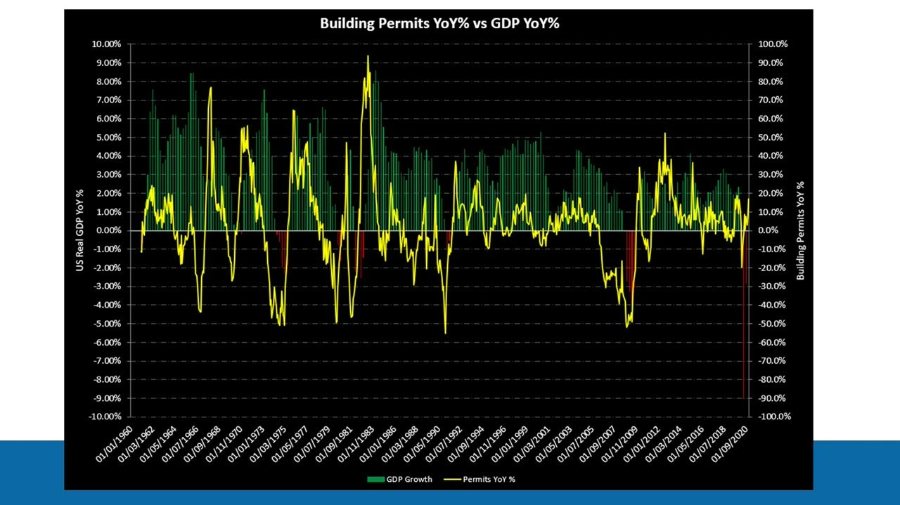
Worked example: the 2008-2009 housing crash
- The most instructive cycle for testing permits as a leading indicator is the 2008-2009 housing crash.
- Permits were above 2 million for most of 2004, all of 2005 and into early 2006; they fell below 2M in May 2006 and below 1.9M in June 2006.
- Given the ~12-16 month permits-to-completions lead, that channel break warned of the crash ~12-16 months early -- the crisis got going in H2-2007.
- The SAAR low was 521,000 permits in April 2009 (reported in May); a near-term high of 687,000 was put in for March 2010.
- Because of the foreclosure/inventory overhang, permits struggled for years and did not decisively break out until Feb-2012.
The table shows Building Permits, Starts and Completions (levels, MoM % and permits YoY %) month by month from Jan-08 to Dec-10, with the Apr-09 trough and Mar-10 near-term high highlighted.
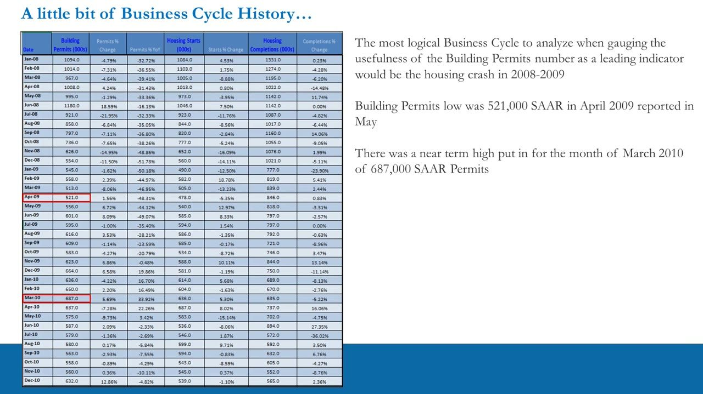
Summary: why building permits matter
- The SAAR of building permits is vitally important to the outlook for US GDP growth and therefore the direction and potential annual returns in the S&P 500.
- They are a leading indicator: completions follow starts, and starts follow permits.
- Permits also reveal developer bullishness/bearishness, consumer housing demand, and -- because both are debt-financed -- the liquidity and health of the US banking and credit sector, plus a likely shift in consumer spending.
- The number also hints at the likely Fed policy response; when the Fed cut rates in July 2019, permits took off almost immediately (July-19: 1.366M, August: 1.471M).
- Used with the money-market and survey leading indicators, it gives a strong read on the economy, money flows and potential Fed policy.
In 2019 permits held flat but did NOT collapse (1.258M Aug-18 -> 1.273M Jun-19) alongside a resilient consumer and services sector and no S&P bear market -- a signal to lean long even as manufacturing rolled over.
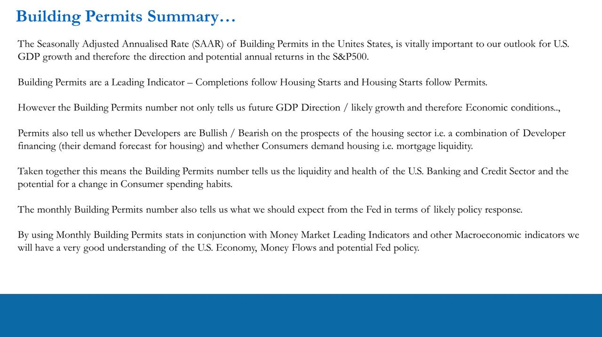
Throwback to the 4X ITPM principles
- 1. Self-sustainability -- do your own work, generate your own trade ideas, no copy trading.
- 2. Work ethic -- put passion aside; be conscientious and run the processes regularly.
- 3. Free information -- all of this data is free; interpretation is what matters.
- 4. Work smart, not hard -- focus on what matters, eliminate the noise, process efficiently and make money.
- Knowing the net direction of the portfolio matters, but being long and short the RIGHT stuff matters just as much: net long but long the wrong names still fails.
Following macro leading indicators regularly is itself adherence to these principles and, Anton argues, puts you ahead of the vast majority of retail traders.
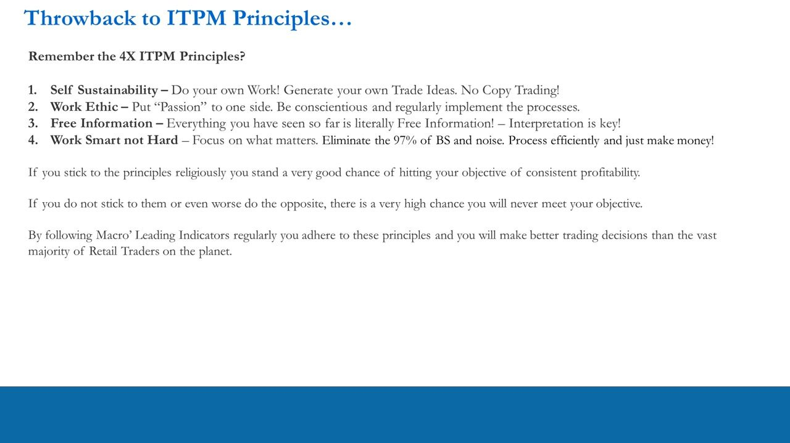
Glossary
- Building PermitAuthorisation to build a new privately-owned housing unit; the paperwork/planning stage, counted monthly by the Census Bureau -- the leading stage of the housing pipeline.
- Housing StartThe point at which construction begins (foundations laid); a coincident indicator of current economic activity.
- Housing CompletionThe point at which the home is finished and marketed; a lagging indicator marking the end of the project.
- SAARSeasonally Adjusted Annualised Rate -- the headline US permits figure, reported in thousands (e.g. 1,704 = 1.7M).
- Form C-404The Census Bureau form on which local permit officials voluntarily report new privately-owned housing units authorised.
- Permit-issuing placesJurisdictions that issue building or zoning permits; the survey universe grew from ~10,000 (1959) to ~20,100 (2014+).
- XHBThe US homebuilder ETF; when permits broke out (Dec-2011 to Feb-2012) XHB rose ~65% (from ~20 to ~33) into 2013 -- where the permits signal cashes out in equities.